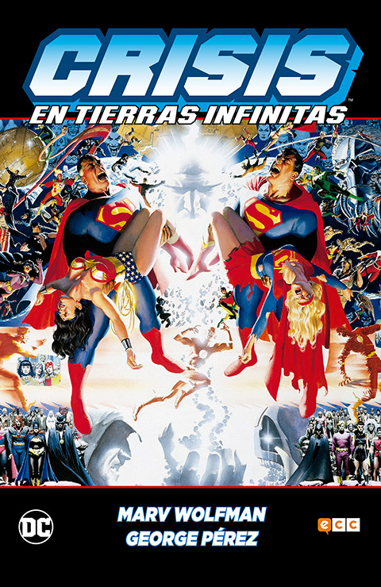
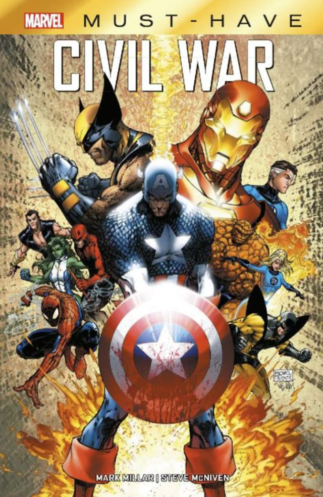

$32.000
Los inicios de la carrera de Bruce Wayne como Batman y de James Gordon en el Departamento de Policía de Gotham City.
La vida de estos dos hombres se entrelaza cuando descubren que son aliados en contra de los poderes corruptos en Gotham City.
|  | Crisis en tierras infinitas
$48.750 Una oleada de antimateria está arrasando el multiverso, y solo el misterioso Monitor parece conocer la causa y, |
|  | Marvel Civil War
$24.500 Después de que otro incidente internacional involucre a Los Vengadores, causando varios daños colaterales, |